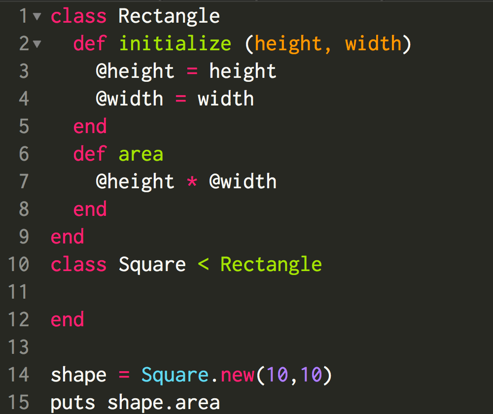
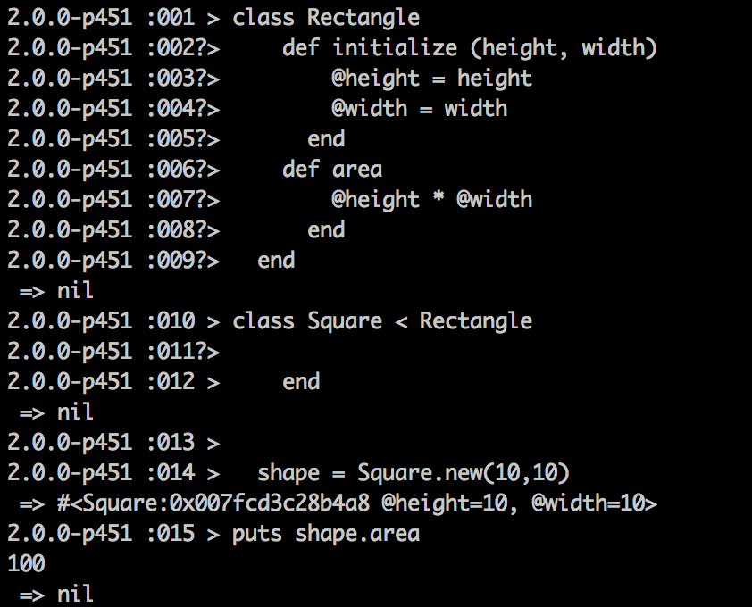
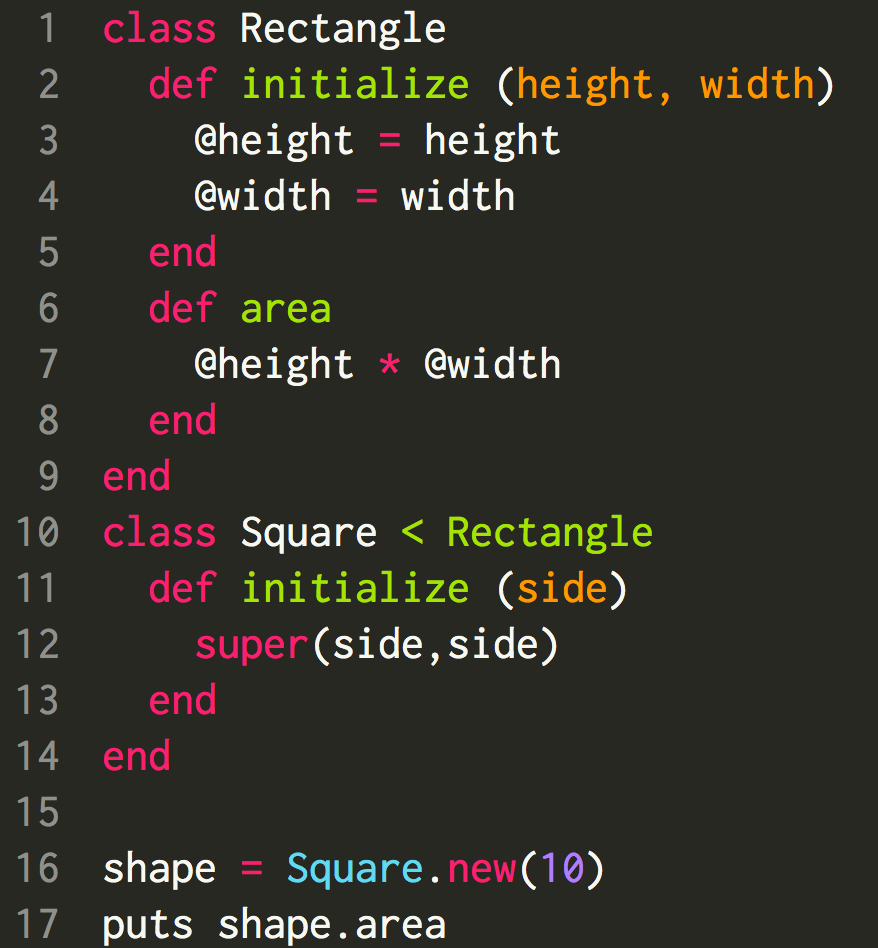
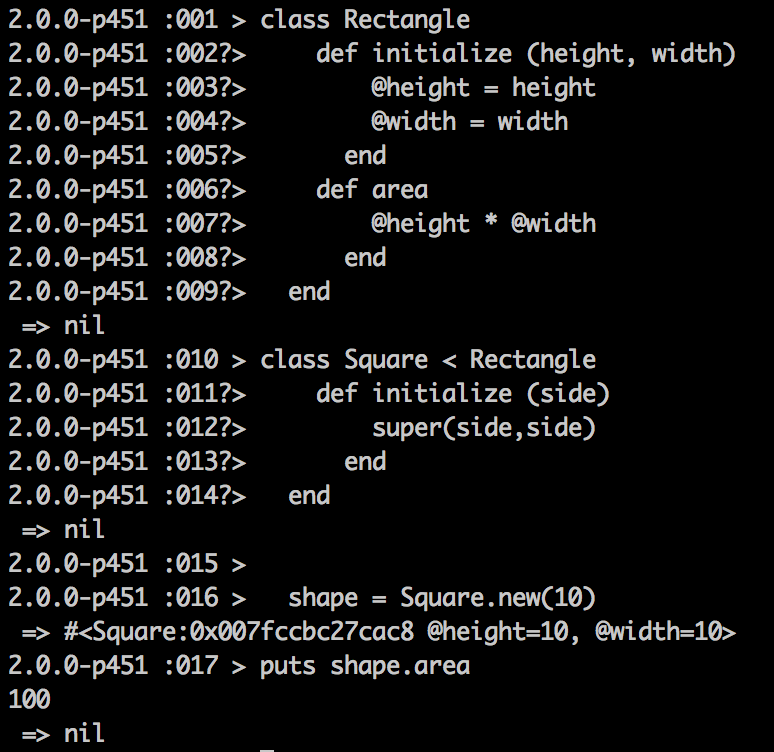
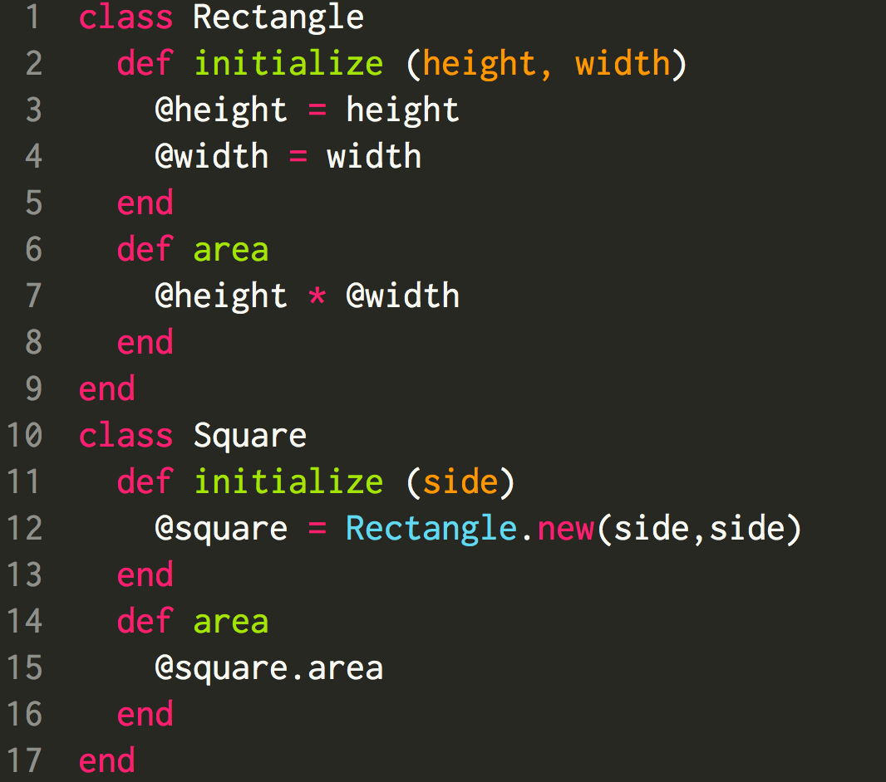

When designing multiple related classes in Object-Oriented Programming (OOP), you will inevitably run into scenarios where you have a choice to make between Inheritance and Composition.
What is Inheritance?
The word inheritance in common society is well known. When someone passes away, someone inherits the possessions of that individual. In programming, the concept of something "inheriting the possessions" of something else is similarly shared.
Suppose we have two classes in Ruby, Class A and Class B, where Class B inherits from Class A. This means that Class B will inherit, or automatically have, the methods of Class A as they are specified in Class A unless they are overriden.
The code below illustrates an example of how a class Square inherits the class Rectangle.
 Notice how in Square we did not define intialize or the area function, it simply inherited those from Rectangle.
We could also make an adjustment to our class. For example, a square only has one side length so it makes sense to only pass in one side length. See below how that is implemented.
 Notice how we pass in one parameter, and then we take that parameter and pass it into the super class, Rectangle, so we have a heigth and width that we can use for methods such as area.
What is Composition?
The word composition can be informally defined as bringing together various elements to create a larger element. Thus, in programming when we are using composition, we are taking things that are already made as building blocks to build something else.
If we use our prior example of Rectangles and Squares, we can make it so that a Square is composed of a Rectangle.
Notice that there is no inheritance, but our intialize method creates an instance of another object that we will use as part of our method.
When to use Composition or Inheritance.
The best rule of thumb I have found is to use inheritance you want something to follow an Is-A relationship. For example, a Square "is a" Rectangle. We most likely aren't going to run into any issues with any changes that we make to Rectangle as Square would follow those.
You may have something where it may be slightly more ambiguous. For example, if you have a Person class and have someone who is an Employee, they may also be a Supervisor as well. You could have Employee inherit from person and then Supervisor from Employee, but not everything may align well so you may use composition to build some of these classes.
This is far from comprehensive, but hopefully it is illustrative.